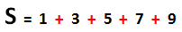
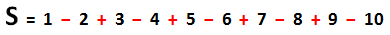
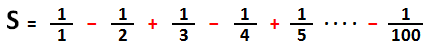

Algorithmsالعوامل في الخوارزميات
مفهوم العوامل و أنواعها
عامل : تعني Operator في اللغة الإنجليزية, و العامل عبارة عن رمز له معنى محدد في البرمجة.
ملاحظة: هناك الكثير من العوامل و كل عامل يمكن إستخدامه لغرض محدد مع الإشارة إلى أنك لست مضطراً لأن تتعلمهم كلهم.
ستتعرف في هذا الدرس على العوامل الأكثر إستخداماً و التي تستخدم في الشروط و الحلقات.
أدرس جميع الأمثلة و التمارين الموضوعة حتى لا تفوتك أي فكرة قد تحتاجها مستقبلاً.
نصيحة
عند دراسة الأمثلة الموضوعة, قم بتغيير قيم المتغيرات و حاول أن تتلاعب بالكود لأن ذلك سيجعلك تفهم أكثر و سيجعل فكرة العوامل ترسخ في ذاكرتك.
العوامل التي تستخدم في العمليات الحسابية Arithmetic Operators
| إسم العامل |
رمزه |
طريقة إستخدامه |
إستخدامه |
| Assignment |
= |
a = b |
أعطي a قيمة b |
| Addition |
+ |
a + b |
أضف قيمة b على قيمة a |
| Subtraction |
- |
a - b |
إطرح قيمة b من قيمة a |
| Unary plus |
+ |
+a |
أضرب قيمة a بالعامل + |
| Unary minus |
- |
-a |
أضرب قيمة a بالعامل - |
| Multiplication |
* |
a * b |
أضرب قيمة a بقيمة b |
| Division |
/ |
a / b |
أقسم قيمة a على قيمة b |
| Modulo |
% |
a % b |
للحصول على آخر رقم يبقى عندما نقسم قيمة a على قيمة b |
| Increment |
++ |
a++ |
لإضافة 1 على قيمة a و تستخدم في الحلقات |
| Decrement |
-- |
a-- |
لإنقاص 1 من قيمة a و تستخدم في الحلقات |
أمثلة و ملاحظات حول طريقة إستخدام و فائدة كل عامل مذكور في الجدول.
شاهد الأمثلة »
العوامل التي تستخدم للمقارنة Comparison Operators
| إسم العامل |
رمزه |
طريقة إستخدامه |
إستخدامه |
| Equal to |
== |
a == b |
لمعرفة إذا كانت قيمة a تساوي قيمة b |
| Not equal to |
=! |
a != b |
لمعرفة إذا كانت قيمة a لا تساوي قيمة b |
| Greater than |
< |
a > b |
لمعرفة إذا كانت قيمة a أكبر من قيمة b |
| Less than |
> |
a < b |
لمعرفة إذا كانت قيمة a أصغر من قيمة b |
| Greater than or equal to |
=< |
a >= b |
لمعرفة إذا كانت قيمة a أكبر أو تساوي قيمة b |
| Less than or equal to |
=> |
a <= b |
لمعرفة إذا كانت قيمة a أصغر أو تساوي قيمة b |
أمثلة و ملاحظات حول طريقة إستخدام و فائدة كل عامل مذكور في الجدول.
شاهد الأمثلة »
العوامل التي تستخدم لوضع شروط منطقية Logical Operators
| إسم العامل |
رمزه |
طريقة إستخدامه |
إستخدامه |
| AND |
&& |
condition-1 && condition-2 |
يستخدم لتنفيذ كود معين إذا تحقق الشرط الأول و الشرط الثاني |
| OR |
|| |
condition-1 || condition-2 |
يستخدم لتنفيذ كود معين إذا تحقق الشرط الأول أو الشرط الثاني |
أمثلة و ملاحظات حول طريقة إستخدام و فائدة كل عامل مذكور في الجدول.
شاهد الأمثلة »
تمارين شاملة حول إستخدام العوامل في الحلقات و الشروط
التمرين الأول
أكتب برنامج مهمته جمع جميع الأعداد المفردة بين 1 و 10.

لا تستخدم الـ Modulo.
إجعله يظهر قيمة العداد و قيمة المتغير S في كل دورة.
الحل و التفسير »
التمرين الثاني
أكتب برنامج مهمته جمع جميع الأعداد المفردة بين 1 و 10.
إستخدم الـ Modulo لتمييز الأعداد المفردة عن المزدوجة.
إجعله يظهر قيمة العداد و قيمة المتغير S في كل دورة.
الحل و التفسير »
التمرين الثالث
أكتب برنامج مهمته جمع جميع الأعداد المزدوجة بين 1 و 10.

لا تستخدم الـ Modulo.
إجعله يظهر قيمة العداد و قيمة المتغير S في كل دورة.
الحل و التفسير »
التمرين الرابع
أكتب برنامج مهمته جمع جميع الأعداد المزدوجة بين 1 و 10.
إستخدم الـ Modulo لتمييز الأعداد المزدوجة عن المفردة.
إجعله يظهر قيمة العداد و قيمة المتغير S في كل دورة.
الحل و التفسير »
التمرين الخامس
أكتب برنامج لحساب قيمة المتغير S النهائية.
إجعل البرنامج يظهر لك قيمة العداد و قيمة المتغير S في كل دورة.

الحل و التفسير »
التمرين السادس
أكتب برنامج لحساب قيمة المتغير S النهائية.

ملاحظة: التمرين يحتوي على معلومة مهمة جداً متعلقة بعمليات القسمة.
الحل و التفسير »


 محرر الويب
محرر الويب نظام الألوان
نظام الألوان محول الوحدات
محول الوحدات محلل عناوين الشبكات
محلل عناوين الشبكات